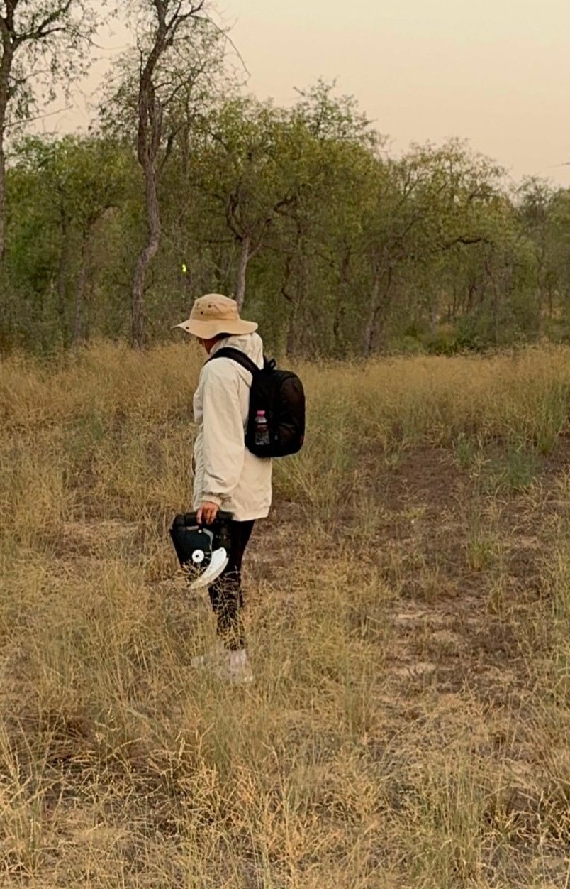

My story
A garden curiosity that became local documentation.
I grew up watching insects in our home gardens, a small curiosity that grew into a deep passion. Today, as an Emirati documenting biodiversity, I find myself returning to the tiny world I loved as a child.
With every image, I learn something new about our rich environment and the life hidden within it.
My macro journey is a journey of calm, reflection, and a desire to preserve the beauty of nature in my country.